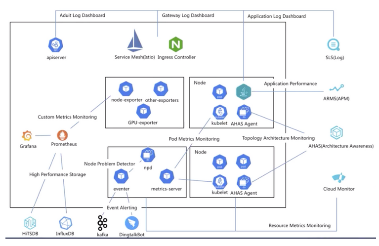

Kubernetes可观察性 [1] #

- NPD： node problem detector
- kube-eventer： Kubernetes 事件离线工具
Kubernetes Metrics监控方案 [2] #
cadvisor/exporter+prometheus+grafana
Kubernetes Logs监控方案[3][4] #
%accordion%es-statefulset.yaml%accordion%
apiVersion: apps/v1
kind: StatefulSet
metadata:
name: elasticsearch-logging
namespace: logging
labels:
k8s-app: elasticsearch-logging
version: v7.10.2
addonmanager.kubernetes.io/mode: Reconcile
spec:
serviceName: elasticsearch-logging
replicas: 2
selector:
matchLabels:
k8s-app: elasticsearch-logging
version: v7.10.2
template:
metadata:
labels:
k8s-app: elasticsearch-logging
version: v7.10.2
spec:
serviceAccountName: elasticsearch-logging
containers:
- image: quay.io/fluentd_elasticsearch/elasticsearch:v7.10.2
name: elasticsearch-logging
imagePullPolicy: Always
...
ports:
- containerPort: 9200
name: db
protocol: TCP
- containerPort: 9300
name: transport
protocol: TCP
volumeMounts:
- name: elasticsearch-logging
mountPath: /data
env:
- name: "NAMESPACE"
valueFrom:
fieldRef:
fieldPath: metadata.namespace
- name: "MINIMUM_MASTER_NODES"
value: "1"
volumes:
- name: elasticsearch-logging
emptyDir: {} ### 生产上不要挂在本地
# Elasticsearch requires vm.max_map_count to be at least 262144.
# If your OS already sets up this number to a higher value, feel free
# to remove this init container.
initContainers:
- image: alpine:3.6
command: ["/sbin/sysctl", "-w", "vm.max_map_count=262144"]
name: elasticsearch-logging-init
securityContext:
privileged: true
%/accordion%
%accordion%fluentd-es-configmap.yaml%accordion%
<source>
@id fluentd-containers.log
@type tail
path /var/log/containers/*.log ### 宿主机映射到容器的目录
pos_file /var/log/es-containers.log.pos ### position日志,消费偏移量
tag raw.kubernetes.*
read_from_head true
<parse>
@type multi_format
<pattern>
format json
time_key time
time_format %Y-%m-%dT%H:%M:%S.%NZ
</pattern>
<pattern>
format /^(?<time>.+) (?<stream>stdout|stderr) [^ ]* (?<log>.*)$/
time_format %Y-%m-%dT%H:%M:%S.%N%:z
</pattern>
</parse>
</source>
output.conf: |-
<match **>
@id elasticsearch
@type elasticsearch
@log_level info
type_name _doc
include_tag_key true
host elasticsearch-logging ### service的名字[集群内部的]
port 9200
logstash_format true
<buffer>
@type file
path /var/log/fluentd-buffers/kubernetes.system.buffer
flush_mode interval
retry_type exponential_backoff
flush_thread_count 2
flush_interval 5s
retry_forever
retry_max_interval 30
chunk_limit_size 2M
total_limit_size 500M
overflow_action block
</buffer>
</match>
%/accordion%
%accordion%fluentd-es-ds.yaml%accordion%
apiVersion: apps/v1
kind: DaemonSet
metadata:
name: fluentd-es-v3.1.1
namespace: logging
labels:
k8s-app: fluentd-es
version: v3.1.1
addonmanager.kubernetes.io/mode: Reconcile
spec:
selector:
matchLabels:
k8s-app: fluentd-es
version: v3.1.1
template:
metadata:
labels:
k8s-app: fluentd-es
version: v3.1.1
spec:
securityContext:
seccompProfile:
type: RuntimeDefault
priorityClassName: system-node-critical
serviceAccountName: fluentd-es
containers:
- name: fluentd-es
image: quay.io/fluentd_elasticsearch/fluentd:v3.1.0
env:
- name: FLUENTD_ARGS
value: --no-supervisor -q
...
volumeMounts:
- name: varlog
mountPath: /var/log
- name: varlibdockercontainers
mountPath: /var/lib/docker/containers ### 收集打到控制台的日志
readOnly: true
- name: config-volume
mountPath: /etc/fluent/config.d
ports:
- containerPort: 24231
name: prometheus
protocol: TCP
...
terminationGracePeriodSeconds: 30
volumes:
- name: varlog
hostPath:
path: /var/log
- name: varlibdockercontainers
hostPath:
path: /var/lib/docker/containers
- name: config-volume
configMap:
name: fluentd-es-config-v0.2.1
%/accordion%
参考 #
- 第12 章 ： 可观测性：监控与日志
- Prometheus监控k8s Prometheus监控方案
- fluentd-elasticsearch EFK监控方案
- kubernetes架构师课程 V 143 ***